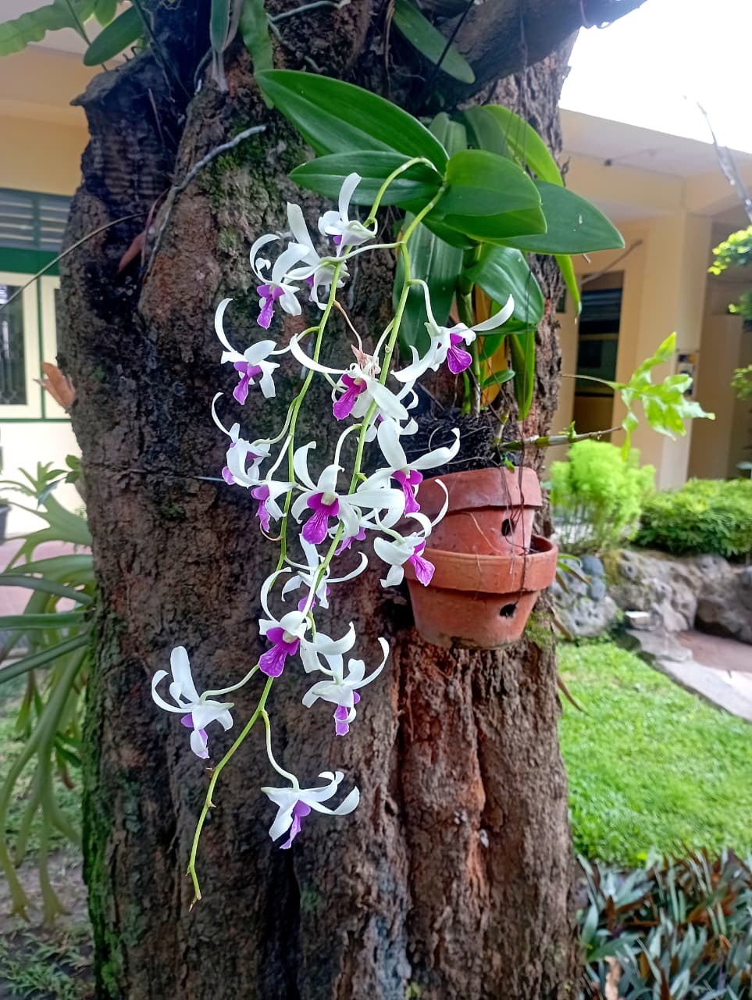
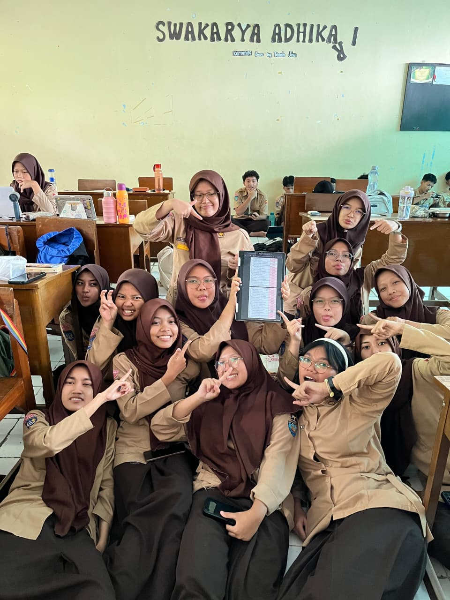
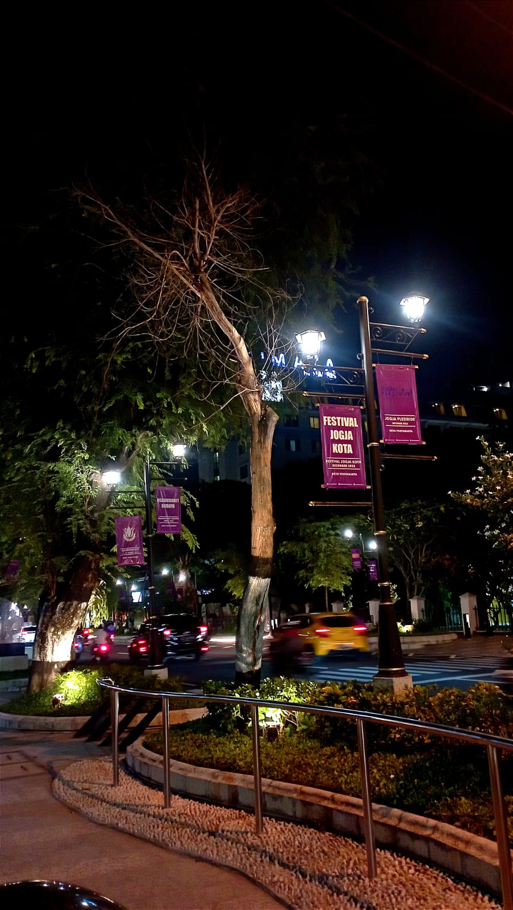
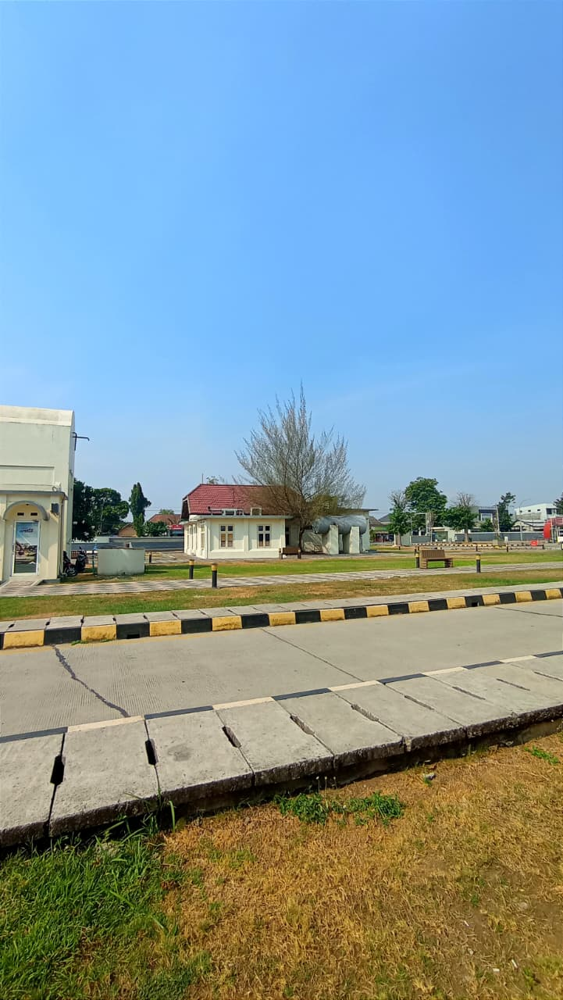
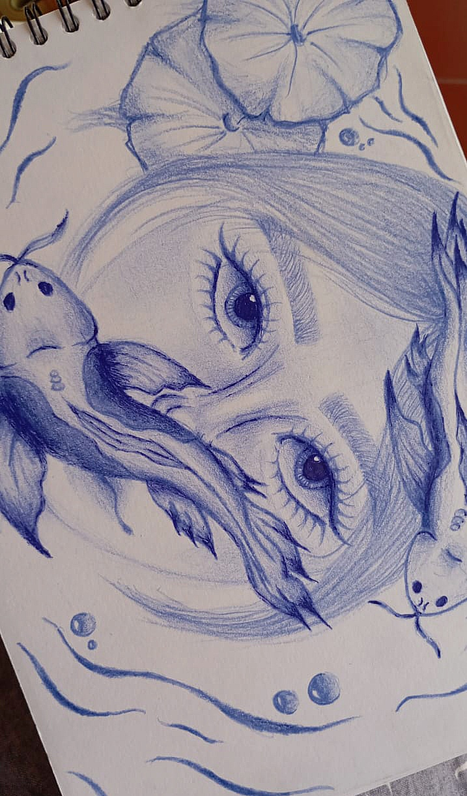
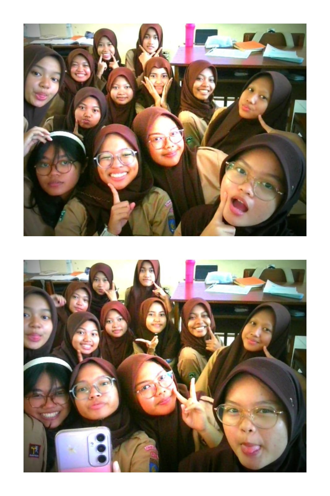
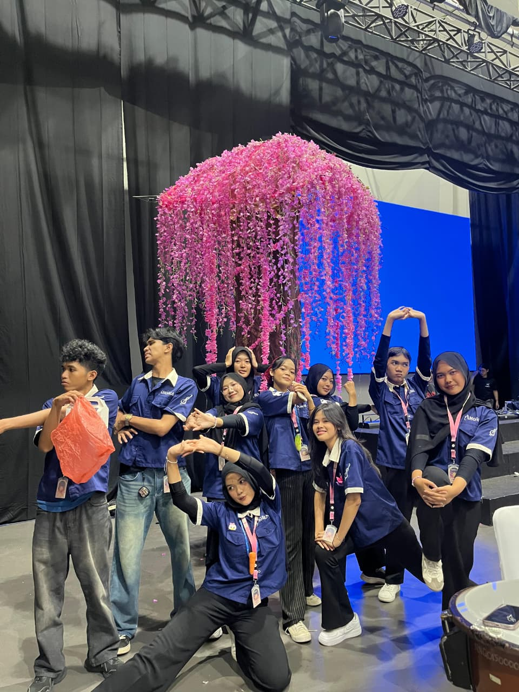
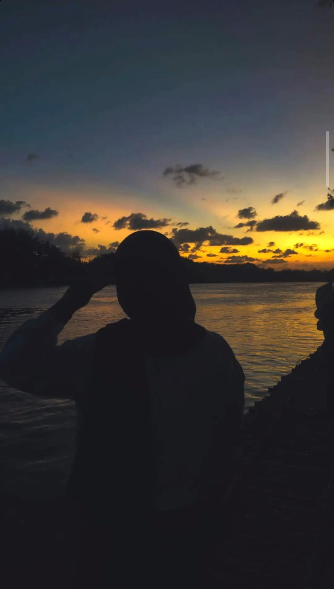

Explor beberapa karya terkini saya dengan berbagai variasi dan genre








Dengan lebih dari satu dekade di bidang seni, saya mengkhususkan diri dalam mengabadikan momen-momen luar biasa dalam kehidupan sehari-hari .
Dari hiruk pikuk jalanan perkotaan hingga keindahan alam yang tenang, saya berusaha untuk menceritakan kisah melalui lensa saya.
Karya saya telah dipamerkan di rumah saya, tetapi kepuasan terbesar saya datang dari menciptakan gambar yang beresonansi dengan orang-orang secara pribadi.
Layanan fotografi profesional sesuai kebutuhan dan gaya yang diinginkan.
Foto profesional untuk personal branding, media sosial, atau kebutuhan pribadi dengan arahan pose dan editing terbaik.
Mengabadikan keindahan alam dan suasana tempat dengan hasil foto yang estetik dan berkesan.
Menangkap suasana kota, aktivitas masyarakat, dan momen spontan yang penuh cerita.
Cetak foto berkualitas tinggi dengan pilihan ukuran, bingkai, dan desain eksklusif.
Retouch wajah, color grading, dan penyempurnaan detail agar hasil foto terlihat lebih menarik dan profesional.
Belajar teknik fotografi, komposisi, pencahayaan, dan editing bersama mentor berpengalaman.
Mari ciptakan karya yang indah bersama.